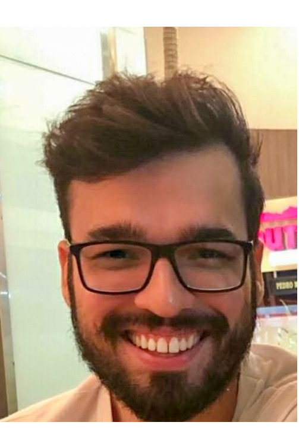

Daniel Gomes de Mello Farias
Electrical Engineer
CV em PDF

Has experience in interoperability and health communication standards
(FHIR / Hl7), automation and control, wireless sensor networks, signal processing
and artificial intelligence in high voltage isolators, brain signals and solar radiation.
Master’s degree in Computational Modeling of Knowledge
UFAL - Brazil (Jan 2018 — July 2020)
Advisor: Andre Luiz Aquino
Financiado por CAPES
[Master]
I've applied wavelet, entropy, statistical parameters and deep neural networks in time series.
The aim was to classify brain signals and forecast solar radiation.
Master’s degree in Health Science and Technology
UEPB - Brazil (May 2018 — Dec 2020)
Advisor: Edmar Candeia Gurjão
[Master]
I've studied interoperability and two standards in healthcare communications: HL7 and FHIR.
The aim was to compare these standards, develop an example and evaluate their characteristics (security, cryptography, privacy, flexibility, and reliability).
Bachelor's degree in Electrical Engineering
CESMAC - Brazil (Jan 2010 — Dec 2014)
Advisor: Sergio Carvalho
[Graduate]
I've my first contact with research. I have the opportunity to study and participate in a lot of projects,
began to write papers and, in the end, I wrote my Undergraduate thesis about wireless sensor networks and Internet of Things (IoT),
which was a project with Arduino, a solar panel and cloud server.
Senior Software Developer
SP - Brazil (Mar 2021 — Today)
Virtual reality game developer for healthcare
Professor
AL - Brazil (May 2021 — Today)
- - Radiologic Technology Associate Degre
- - Safety Management Associate Degree
Research
AL - Brazil (Sep 2019 — May 2021)
- - Analysis of electronic and tax documents for the calculation of taxes
- - Forecast of Solar Radiation with Deep Learning Techniques.
Teaching Assistant
AL - Brazil (Jan 2019 — Jun 2019)
- - Computer Science (Wireless Sensor Network)
Professor
PB - Brazil (Aug 2020 — Oct 2020)
AL - Brazil (Dec 2016 — Feb 2017)
- - Federal Institute of Paraiba (IFPB) -> Renewable Energy Systems
- - Federal Institute of Alagoas (IFAL) -> Automotive Electrics
- - Federal Institute of Alagoas (IFAL) -> Programmable Logical Controller (PLC)
Undergraduate Researcher
AL - Brazil (Aug 2012 — Feb 2014)
- - Determination of the Physical State of Conservation of Insulators using the Radio Frequency Technique.
- - Definition of criteria for choosing a low cost wireless sensor network (WSN)
- - Comparison between Wavelet Classifiers for Verifying the Conservation Status of High Voltage Glass Insulators for 69 kV Networks Using Artificial Neural Network.
-
Voltage Regulation For Residential Prosumers Using a Set of Scalable Power Storage. In: Energies 2021. ISSN: 1996-1073./b>
DOI Link
-
The Technology Applied to the Inspection of the Architectural Heritage of Maceio Commercial Center - Alagoas. In: Rehabend 2018, Caceres, Spain. Euro – American Congress - Construction Pathology, Rehabilitation Technology and Heritage Management. ISBN: 978-84-697-7032-0.
Abstract
-
Application of Artificial Intelligence Techniques for the Classification of Wrist Movements in Time Series Generated by Electroencephalogram (EEG). In: V ERMAC - Regional Meeting of Applied and Computational Mathematics, 2018, Maceió, Brazil.
-
Buildings and Advertising on the Street of Commerce of the Historic Center in Maceió: a Reality... And does the Legislation Control It?. In: XI North Northeast Congress of Research and Innovation, 2016, Maceió, Brazil.
-
Heritage Education as a Tool in Combating the Irregularities of Advertising in Buildings at Street of Comércio / Maceió-AL. In: Academic Congress of Innovation and Technology – CAIITE, 2016, Maceió, Brazil.
-
Remote Monitoring of an Environment Using Wireless Sensor Networks. In: Academic Congress of Innovation and Technology – CAIITE, 2016, Maceió, Brazil.
-
Monitoring environments with difficult access using low cost wireless sensor networks. In: National Meeting of Electrical Engineering Students, 2015, Paulo Afonso, Brazil.
-
For an exploratory education. In: Congreso Ibero Latinoamericano De Ciencias, Innovacion Y Educacion Technology 2014. Buenos Aires - Argentina ISBN: 978-84-7666-210-6.
-
Practical Physics Class: Challenges and Possibilities. In: II International Symposium of Enseñanza de las Ciencias (SIEC 2014).
Languages
- Portuguese (Fluent)
- English (Intermediary)
- Spanish (Basic)
Computer Programmer
- Unity, (C#) (Fluent)
- HTML, CSS, JavaScript (Fluent)
- Python, Keras (Tensorflow) (Fluent)
If you want to start a conversation about any of my research interests, please send me a message! I would be super glad to help or be helped and begin a collaboration!